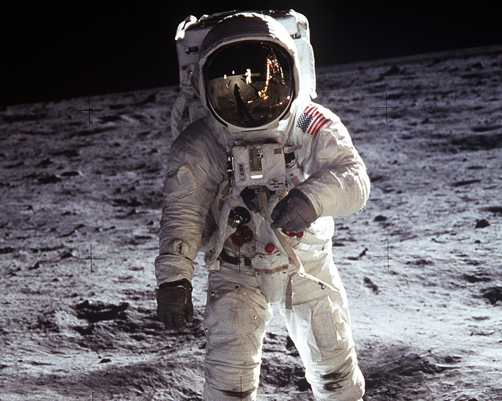
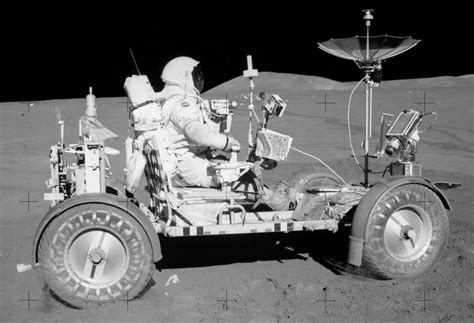
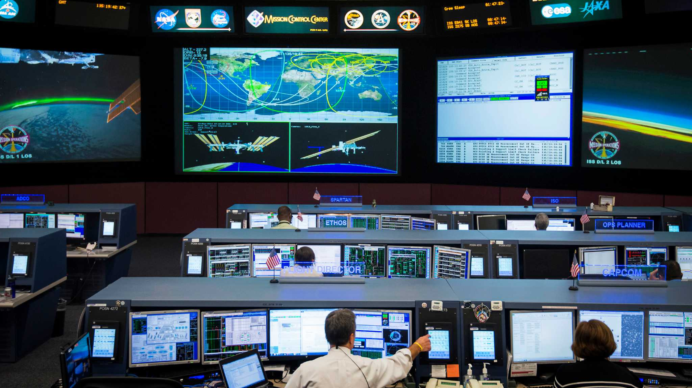
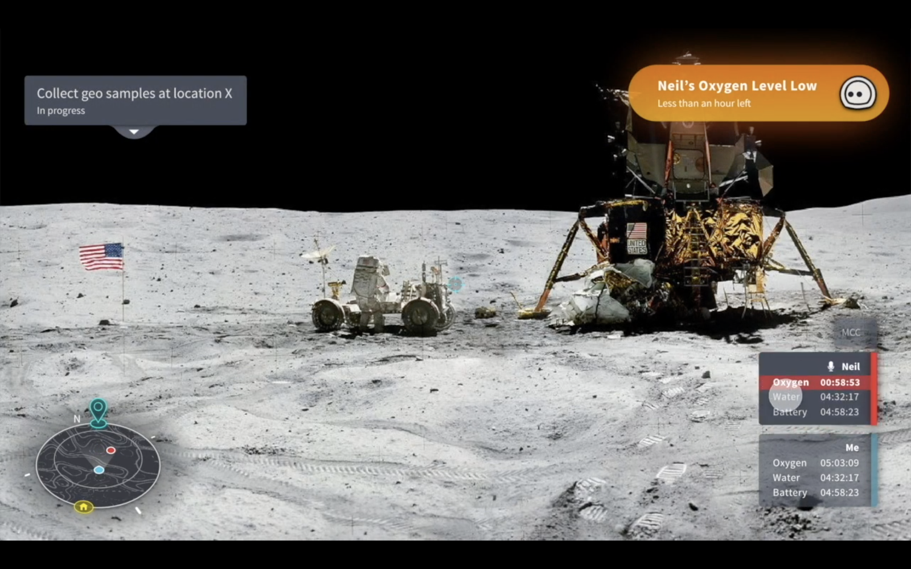
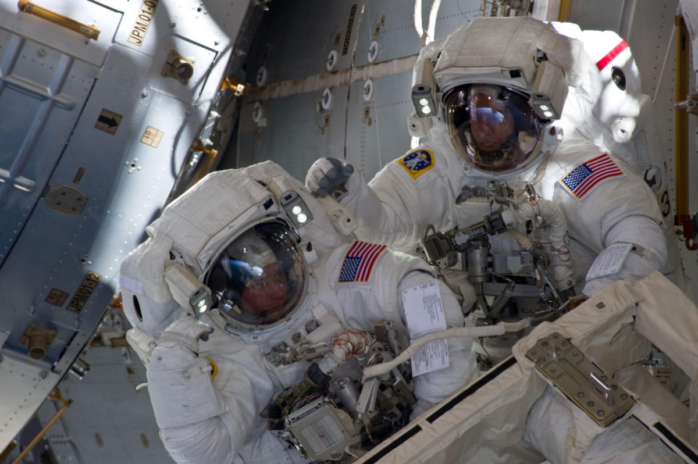
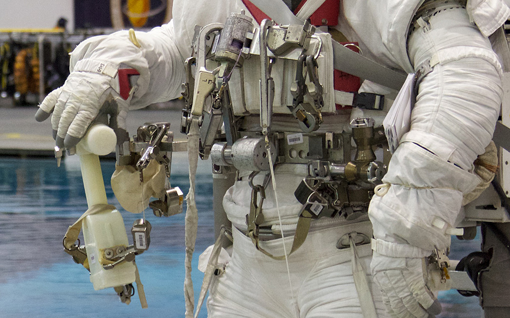
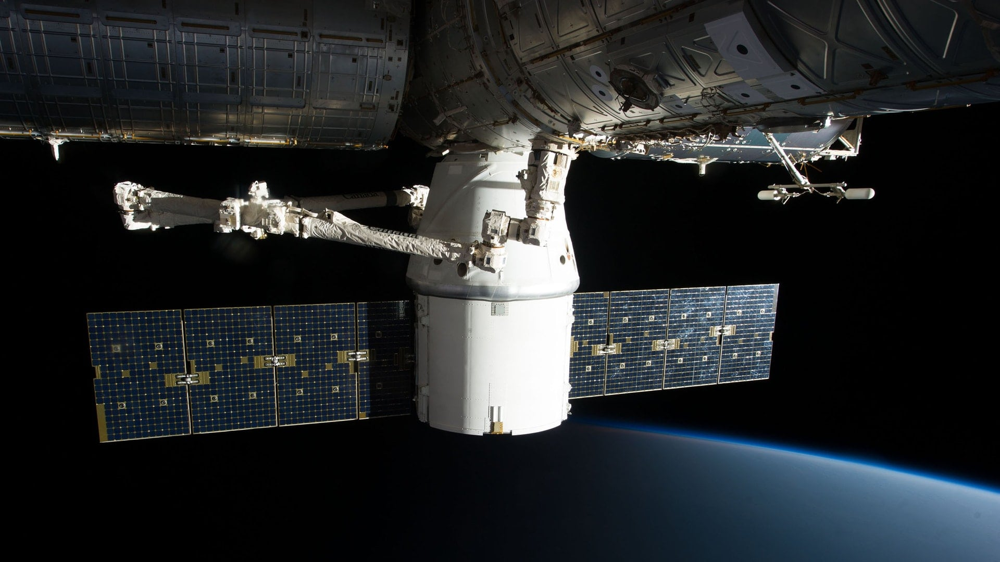
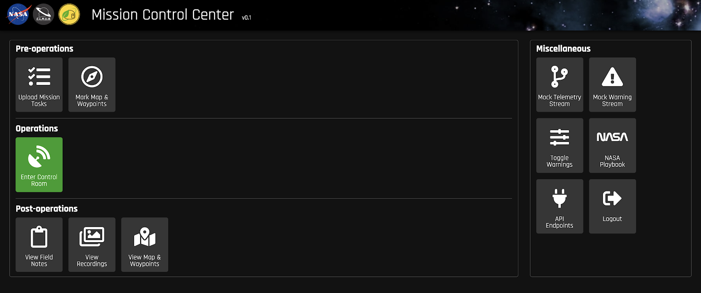
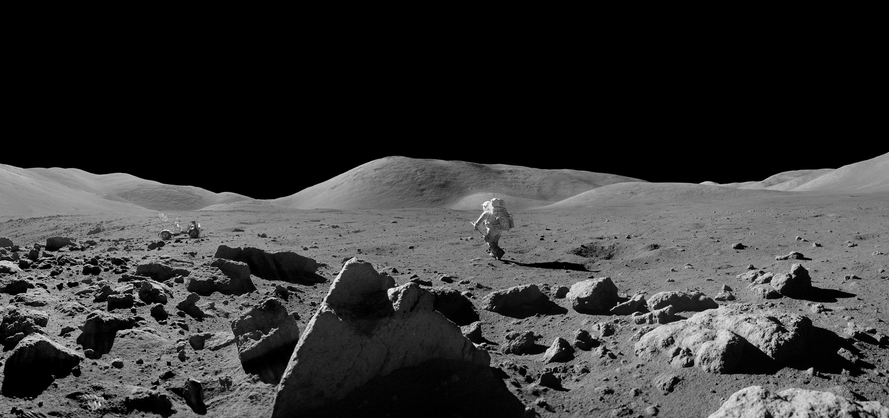

Verbally provide information on an astronaut's suit supplies or bioinformatics
Provide task information verbally while astronaut is on planet surface
Send and recieve information from NASA Mission Control Center
Compliments CLAWS ATLAS Augmented Reality Project
Transfer information verbally about tasks or bioinformatics between astronauts
Provide updates on tools being used by astronauts
Provide task information verbally when astronaut is working on space station
Send and recieve information from CLAWS Mission Control Center
Provide verbal commands to reaching objectives on planets surface